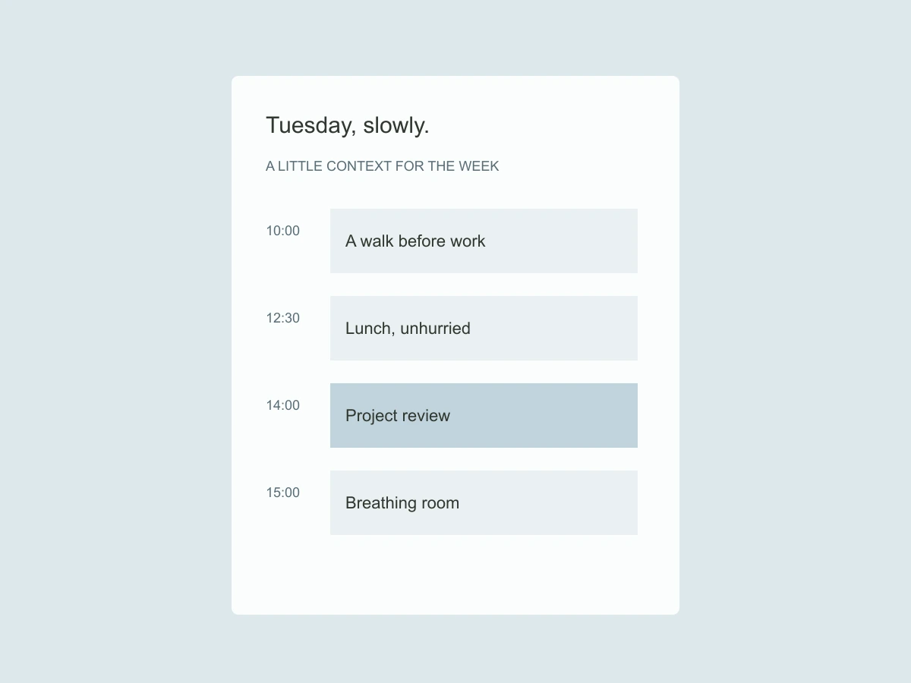

Everyday planning / 2025
Window — Making room between the things on a calendar.
Window is a calendar concept that treats the space between appointments as something worth seeing. It is a deliberately small experiment in planning a day without turning every free minute into another task.

Can a calendar show capacity without demanding productivity?
A conventional calendar makes an unbooked afternoon look empty. In practice, a person may need time to travel, prepare, recover or simply leave something unresolved. I wanted to represent those softer boundaries without assigning them the same visual weight as a meeting.
The decision
The central gesture is a soft window around a commitment. A user can add preparation or travel time as a pale extension, while the confirmed event remains crisp. The extension belongs to the event, so moving the meeting preserves the relationship. It is not a second item to manage.
A small interaction / compare the language
Following the detail
The day view starts with the next meaningful transition rather than midnight. A compact weekly strip provides orientation without shrinking seven full schedules onto a phone. A text summary states the available stretches in plain language. The product avoids a score for how efficiently the time has been used.

The tradeoff
Soft boundaries can look like confirmed bookings. I separated them through labels, line treatment and an explicit legend, rather than relying on opacity alone. A shared calendar would need a clear policy for what is private and what is visible; this concept remains a personal planning study.
What I would test next
I learned to design the absence as carefully as the event. A calmer calendar is not one with fewer controls. It is one that can say “this time is available” without implying that it should immediately be filled.